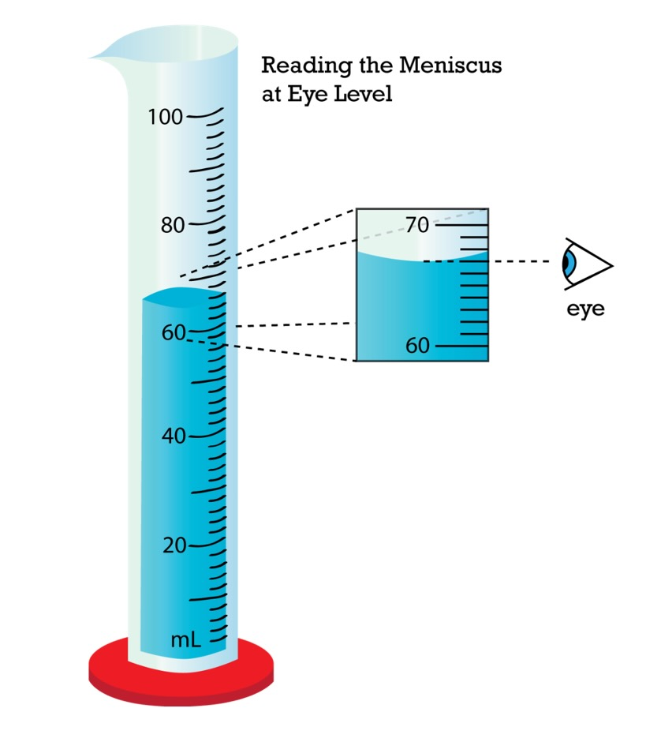

📐 Problem Set #1
Important Equalities
- 1 mile = 1609 m
- 2.54 cm = 1 in
- 100 cm = 1 m
- 1000 m = 1 km
- K H D u d c m
- Convert 400 kg → g
- Convert 365 mL → cL
- Convert 543,210 km → mm
- How many meters are in 350 km?
- How many Liters are in 430 mL?
- Convert 12 miles → m
- Convert 3 days → hours (you should know basic time equalities in your head)
- Oahu is 2,500 miles from California. What is that in meters?
- The distance from Ewa Beach to Kailua is approximately 48 km. How many miles is this?
- Summer was 79 glorious days. How many seconds is that?
🧪 Problem Set #2
1. In the image below, what volume does the graduated cylinder read (in mL)?

- Convert the value you obtained in #1 to L.
- Mr. Eachus and Dr. Park are arguing over who drinks more coffee each morning. Mr. Eachus says he drinks 0.25 L. Dr. Park says he drinks 250 mL. Who drinks more coffee? Explain.
- Explain why it is useful to learn / understand the metric system (2–3 sentences).
- If you are converting 12 cm to inches, why would you use the unit factor 1 in2.54 cm instead of 2.54 cm1 in?
- Which value is larger: 1000 g or 0.5 kg?
- Which value is smaller: 25 cm or 2.5 m?
- Explain how it is possible that 500 cm is equal to 5 m.